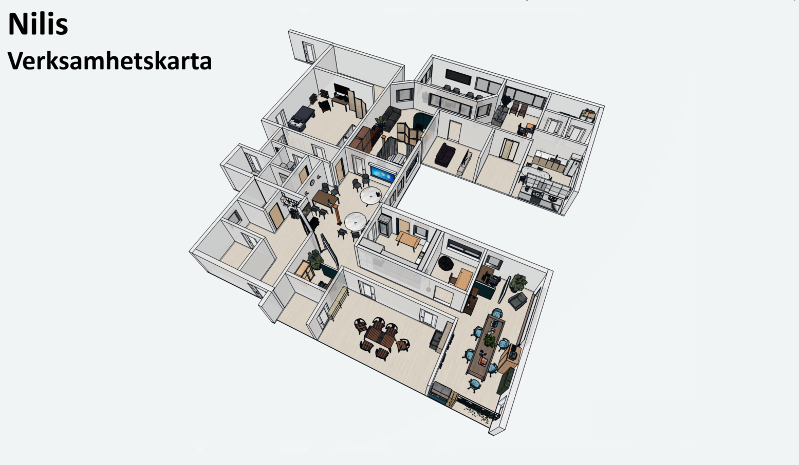
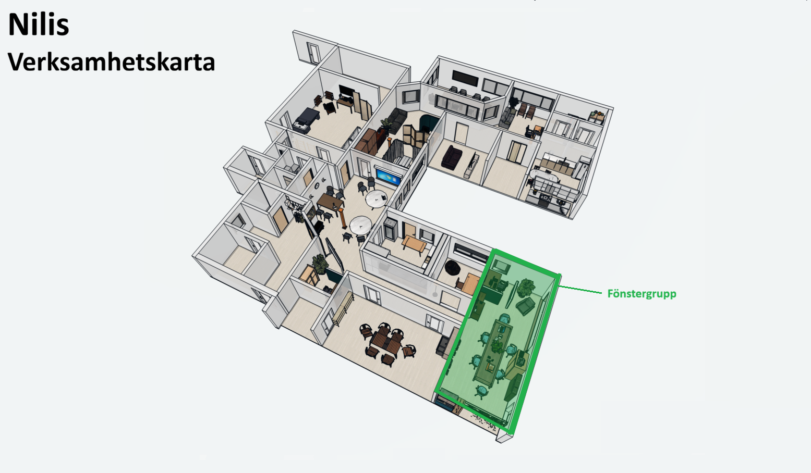
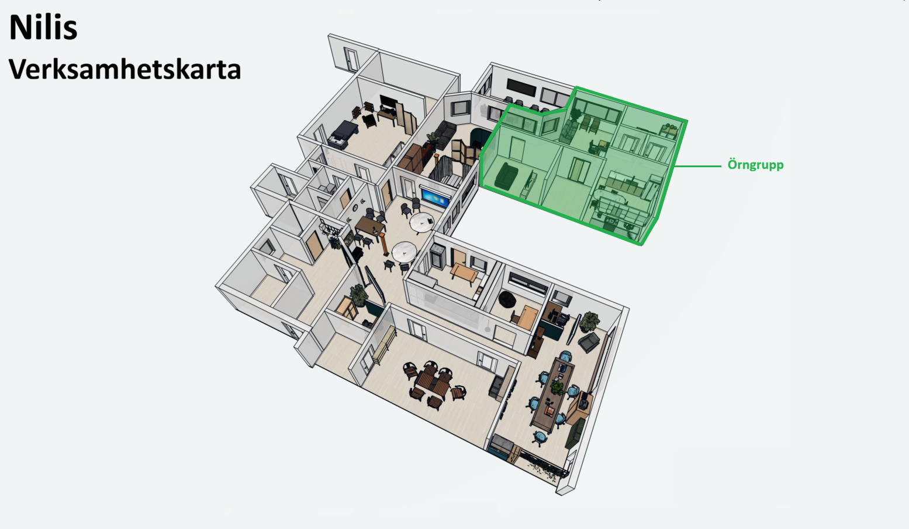

← Tillbaka till Nilis
Byt vy
🔊 Svenska
🔊 العربية
🔊 Soomaali
Nilis daglig verksamhet. Här kan du utforska verksamheten genom att klicka på olika grupper i kartan. Välj en grupp för att läsa mer om hur de arbetar, vilken teknik som används och vilka aktiviteter som finns.


